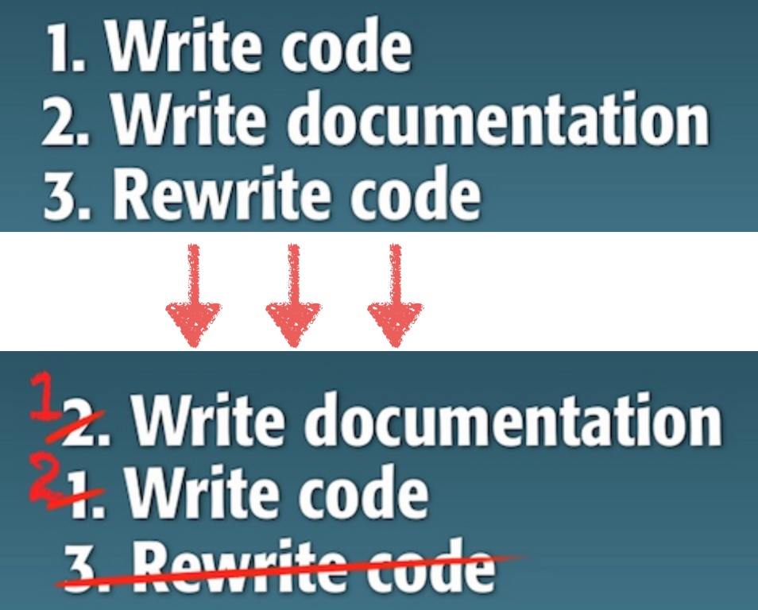
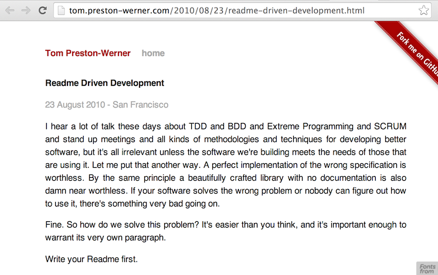

Documentation with mkdocs
simple and effective tool for creating beautiful docs
Ivan (@vanzaj)

Documentation Driven Development
Readme Driven Development
Write Greate Documentation
|
Django...
- ~80,000 lines of Python
- ~120,000 lines of English
- 4x the length of the New Testament
- 2x the length of Infinite Jest
What to write
- step-by-step tutorials
- overviews and topical guides
- low-level reference material
Auto-generated documentation is almost worthless... most of the time it’s easier just to read the source than to navigate the bullshit that these autodoc tools produce.
Documentation as code
- treat it as a separate project
- separate content from presentation
- must be under version control
- automate processing & publishing steps
Things to try
- files organization in subsections
- links to internal pages
- links to internal images